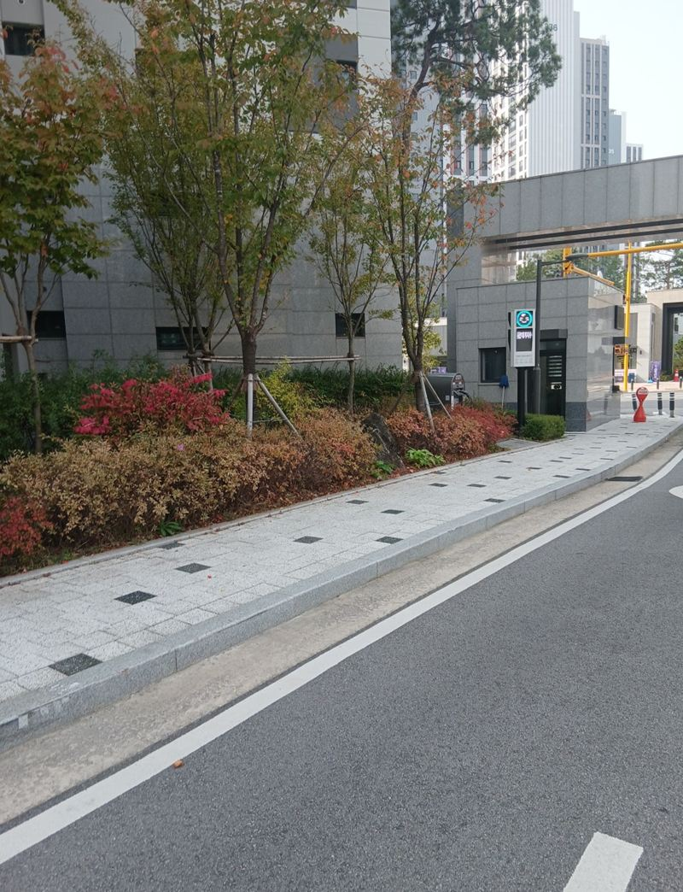
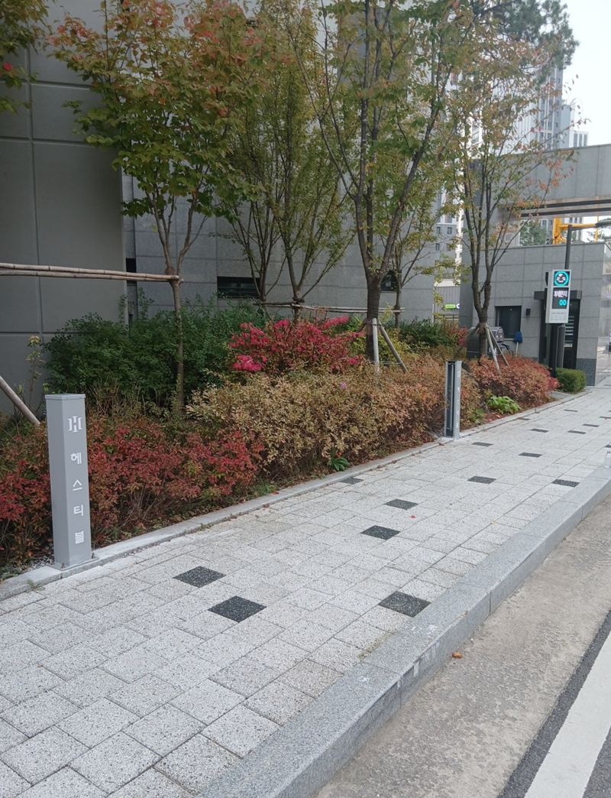
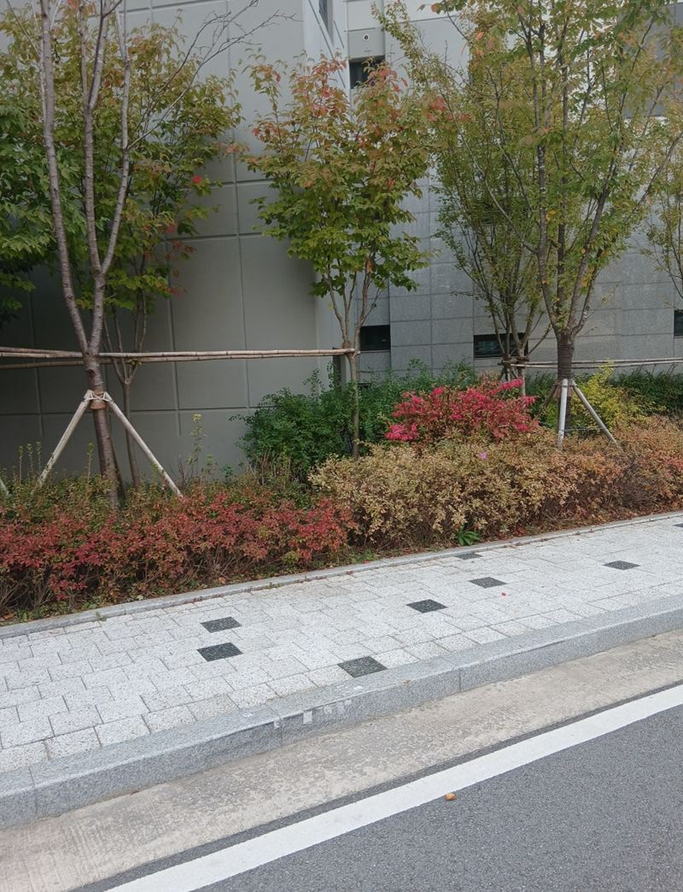
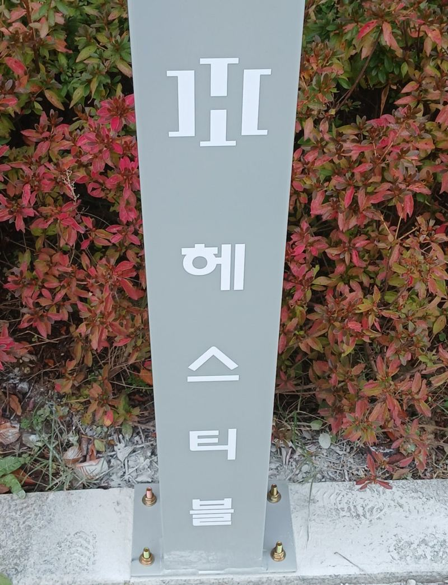
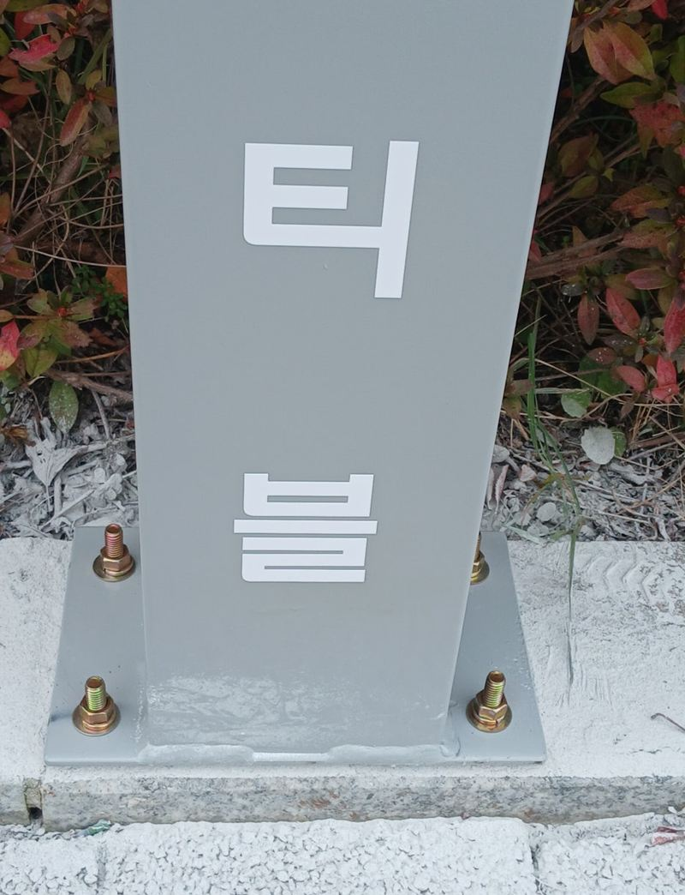
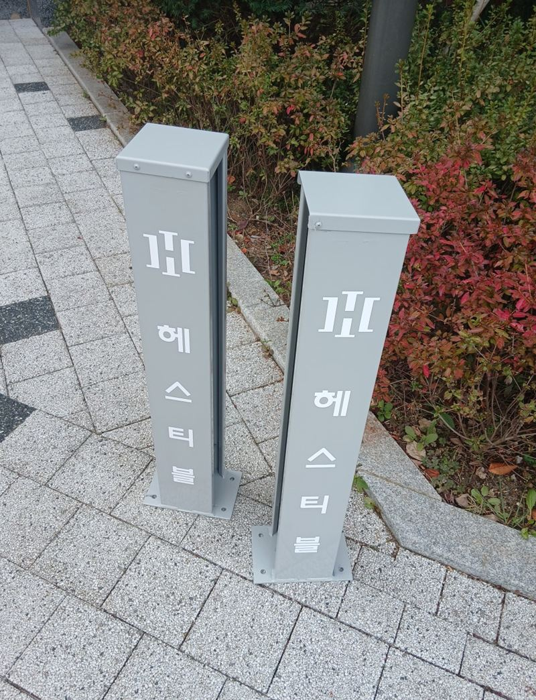
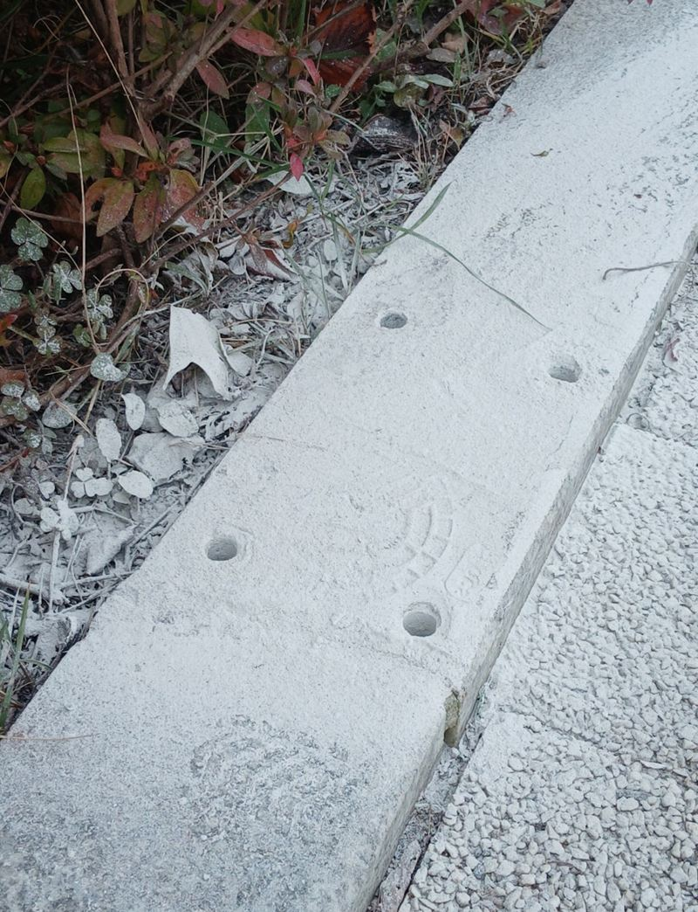

평택 실외 현수막 걸이대 지지대 제작·설치 방법

 설치 전설치 후
설치 전설치 후← 밀어서 전후 비교 →
"5m짜리 현수막을 주로 걸 건데, 지나다니는 데 방해되지 않으면서 깔끔하게 보였으면 해요. 경계석 정리까지 될까요?" 평택 고덕동 아파트 관리 쪽 문의였어요. 단지 안내나 행사 공지를 걸 곳이 마땅치 않아 나무나 난간에 묶어 걸고 있었어요. 5m 현수막 길이에 맞춰 기둥과 가로대를 맞춤 제작하고, 보도블록을 코어로 뚫어 케미컬 앙카로 기둥을 세운 뒤 경계석을 정리했어요.
| 현장 | 평택 고덕동 아파트 단지 화단 앞 보도 |
|---|---|
| 요청 | 5m 현수막용 거치대, 통행 방해 없이, 경계석 정리 포함 |
| 한 일 | 동선·시야 확인 → 실측·마킹 → 지중 상태 확인 → 코어 타공 → 케미컬 앙카 → 기둥 수직 고정 → 가로대·브라켓 체결 → 경계석 정리·실런트 |
| 제작 | 현수막 길이에 맞춘 기둥 간격과 가로대 길이 |
어디에 세울지부터 정해요
현수막 걸이대는 잘 보이는 곳이어야 하지만, 사람과 차가 다니는 데 걸리면 안 돼요. 아이들 보행로, 휠체어·유모차가 지나는 길, 차량 운전자의 시야를 먼저 확인했어요. 현수막 아래로 사람이 지나가도 머리에 닿지 않게 충분한 높이를 잡았고, 밤에 가로등 빛이 가려 그림자가 지지 않는지도 봤어요.
기둥 간격은 5m 현수막을 기준으로 정했어요. 천은 실제로 조금씩 길이가 다르고 당기면 늘어나서, 그만큼 여유를 두고 가로대 길이를 계산했어요.


기둥 고정하는 순서
지중 확인과 코어 타공
보도블록 아래 콘크리트 두께와 묻힌 관로가 있는지 먼저 보고, 표시한 자리를 코어로 뚫었어요. 먼지와 찌꺼기를 깨끗이 빼야 앙카가 잘 붙어요.
케미컬 앙카
구멍 청소 → 약제 주입 → 앙카 삽입 → 경화 순서를 지켰어요. 굳는 동안 기둥을 임시로 잡아 수직을 계속 맞췄어요.


기둥과 가로대
베이스 판을 규격대로 조이고 다시 한 번 토크를 확인했어요. 가로대와 브라켓은 현수막 당김을 버티도록 두 겹으로 체결하고, 모서리엔 천이 닳지 않게 보호 캡을 씌웠어요.

경계석 정리
요청하신 대로 경계석을 정돈하고 모서리를 실런트로 마감해 걸려 넘어지는 일이 없게 했어요.

바람에 버티게 하려면
같은 5m 현수막이라도 세우는 자리의 바람길에 따라 받는 힘이 크게 달라요. 건물 모퉁이나 단차가 있는 곳은 바람이 몰려요. 그래서 설치 전에 바람 통로를 보고, 앙카와 브라켓을 그만큼 튼튼한 것으로 골랐어요. 강풍 예보가 있으면 현수막을 잠시 내려 두시라고 운영 방법도 함께 안내했어요.
- 정기 점검체결부가 풀렸는지, 프레임이 휘었는지 가끔 봐 주세요.
- 교체 쉽게현수막을 자주 바꾸는 곳이라 브라켓을 손 닿기 쉬운 방식으로 했어요.
- 물 빠짐타공 자리에 물이 고이지 않게 경사를 다시 확인했어요.
시안대로 현수막을 걸어 보니 통행에 걸림이 없고 멀리서도 잘 보여, 관리 쪽에서 만족하셨어요.
현수막을 바꿀 때 편하게
단지 현수막은 행사나 공지마다 자주 바뀌어요. 그래서 걸고 떼기 쉬운 브라켓 위치와 끈을 묶을 고리 간격을 미리 정해 두면 관리하시는 분 손이 덜 가요. 발판을 놓을 자리도 함께 안내해 드렸어요.
현수막은 너무 팽팽하게 당기면 바람에 찢어지고, 느슨하면 펄럭이며 기둥을 흔들어요. 적당히 당겨 묶고, 강풍 예보가 있으면 잠시 내려 두는 게 걸이대를 오래 쓰는 방법이에요.
현수막 걸이대 질문
2단으로 만들 수 있나요?
저단형, 1단, 2단 중 고를 수 있어요. 걸 현수막 수에 맞춰 정해요.
기둥에 단지 이름을 넣을 수 있나요?
기둥 문구나 반사 스티커를 넣을 수 있어요.
매립식으로도 되나요?
앙카 고정 말고 땅에 묻는 방식도 가능해요. 바닥 상태를 보고 정해요.
학교·상가 앞에도 세우나요?
단지, 학교, 상가, 공공시설 모두 해요. 관리 규정이 있으면 미리 알려주세요.
현수막 크기가 달라지면요?
가로대 길이 안에서 끈 길이로 맞추거나, 처음부터 자주 쓰는 크기에 맞춰 만들어요.
기존 걸이대가 기울었어요.
받침 고정이 풀린 경우가 많아요. 앙카를 다시 잡아 세울 수 있어요.
다른 조경·시설물 현장
세울 자리 사진과 주로 걸 현수막 크기를 알려주세요.
전화 상담 010-4517-9872